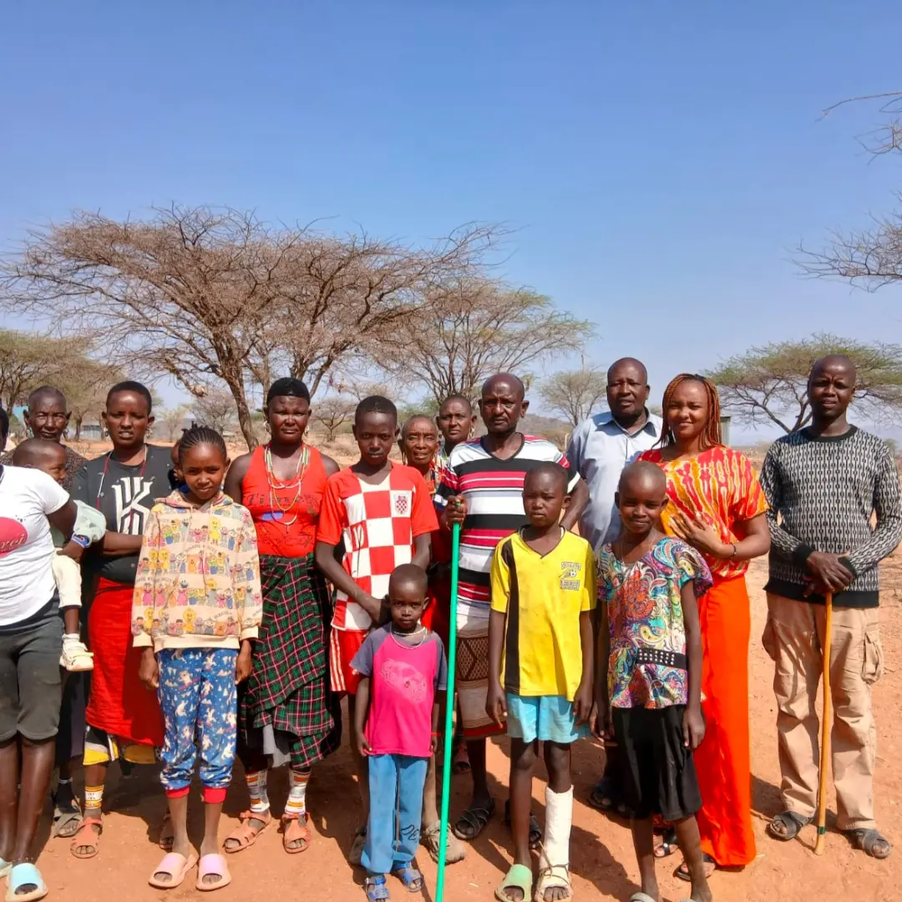

Water security & climate stress
Recurring drought, limited access to safe water, inadequate storage and rainwater harvesting, and climate pressure on pastures and daily survival.
IMPACT & RESOURCES
Documents, updates and learning from our founding period of community listening and engagement across Northern Kenya.
YEAR IN REVIEW

As a newly established organization, NRI’s priority in the founding period (2025–2026) was not to arrive with ready-made projects, but to listen. We spent time with pastoralist communities, women, youth, children and household leaders to understand their lived realities, challenges and priorities.
These engagement sessions form the foundation of our work. They ensure that every programme we design responds to real needs identified by the people we serve.
Listening to communities. Learning together. Building solutions.
WHAT WE HEARD
Recurring drought, limited access to safe water, inadequate storage and rainwater harvesting, and climate pressure on pastures and daily survival.
Heavy burden of water collection, limited skills and income opportunities, concerns around girls’ education and protection, and support for vulnerable women and widows.
Limited pathways for skills and employment readiness, desire for mentorship and entrepreneurship support, and pressure on traditional livelihoods under a changing climate.
IMMEDIATE FOCUS
Guided by what communities shared, NRI prioritises water security and climate resilience as the first area of action:
DOCUMENTS & UPDATES
Mission, vision, core values, who we serve and key programme areas.
LOOKING AHEAD
This founding year was about presence, trust and understanding. In the coming period, NRI will:
ACCOUNTABILITY STARTS WITH CONVERSATION